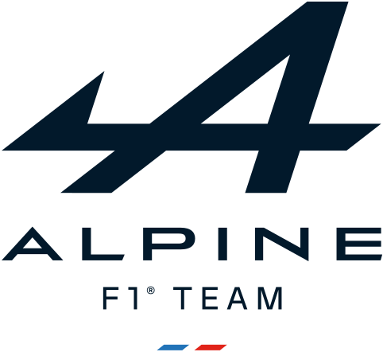

McLaren
Lando Norris NOR
Oscar Piastri PIA
Kompletné štartové pole sezóny 2026.
11 tímov a ich jazdecké dvojice.
ŠTARTOVÉ POLE 03
Lando Norris NOR
Oscar Piastri PIA
Charles Leclerc LEC
Lewis Hamilton HAM
Max Verstappen VER
Isack Hadjar HAD
George Russell RUS
Kimi Antonelli ANT
Fernando Alonso ALO
Lance Stroll STR
Alexander Albon ALB
Carlos Sainz SAI
Nico Hülkenberg HUL
Gabriel Bortoleto BOR

Pierre Gasly GAS
Franco Colapinto COL
Esteban Ocon OCO
Oliver Bearman BEA
Liam Lawson LAW
Arvid Lindblad LIN
Sergio Pérez PER
Valtteri Bottas BOT
Zostavy podľa štartového poľa VC São Paula 2026.